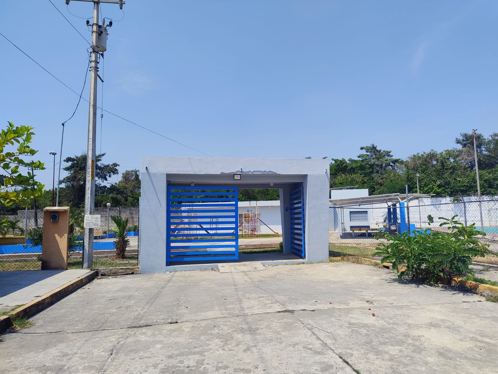
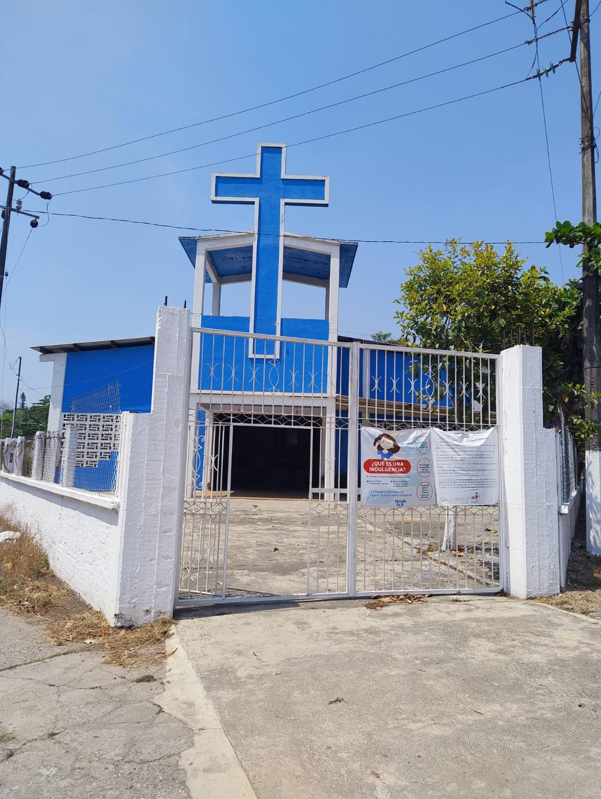
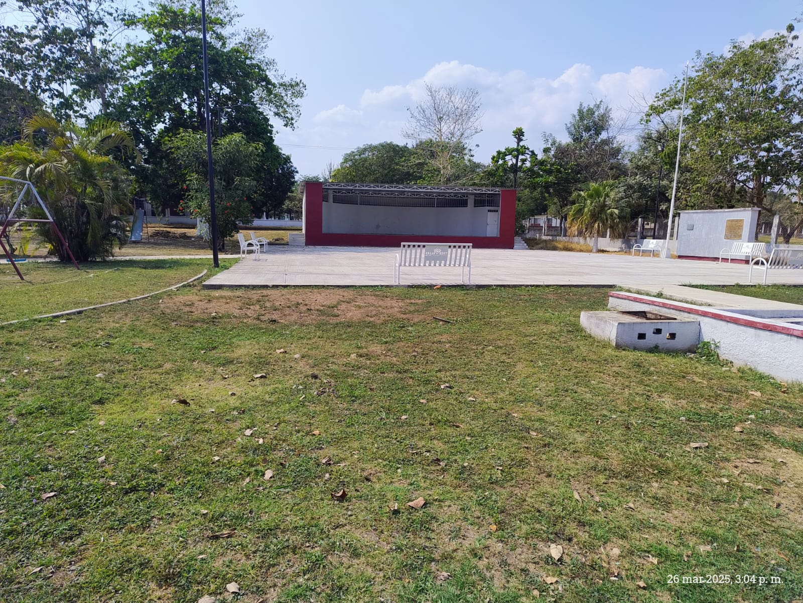

La colonia Adolfo Ruiz Cortines, es una colonia donde la mayoría de sus habitantes son obreros del ingenio tres valles, de ahí su sobrenombre “la colonia obrera”, esta colonia fue creada por parte del ingenio tres valles, ya que necesitaba un lugar donde tener a sus trabajadores, por lo cual cambiaron de residencia a algunos trabajadores del ingenio de la ciudad de Cosamaloapan.
Unidad deportiva “José Ángel Ponce García”.
Dentro de la colonia obrera hay muchos lugares de interés,
los cuales la mayoría de ellos tienen un papel muy importante
dentro de esta colonia, uno de los lugares de interés mas
importante es la unidad deportiva “José Ángel Ponce García”,
esta unidad deportiva cuenta con 3 canchas múltiples, un área
recreativa y un campo deportivo para futbol.

LA IGLESIA CATOLICA.
Otro de los lugares de interés de la colonia obrera es la iglesia católica,
a esta iglesia acuden la mayoría de los habitantes de la colonia obrera,
ya que es la religión que mas predomina dentro de la colonia obrera.

El parque “Morelos y pavón”.
Una de los principales lugares de interés de la colonia obrera es el parque,
este parque acabo de ser remodelado por parte del ayuntamiento de tres valles
Veracruz, este parque sirve de ayuda para las personas emprendedoras, ya que cuando
hay algún evento cultural suelen llegar microempresas a vender sus productos.

Información extraída de los habitantes anónimos de la colonia obrera.